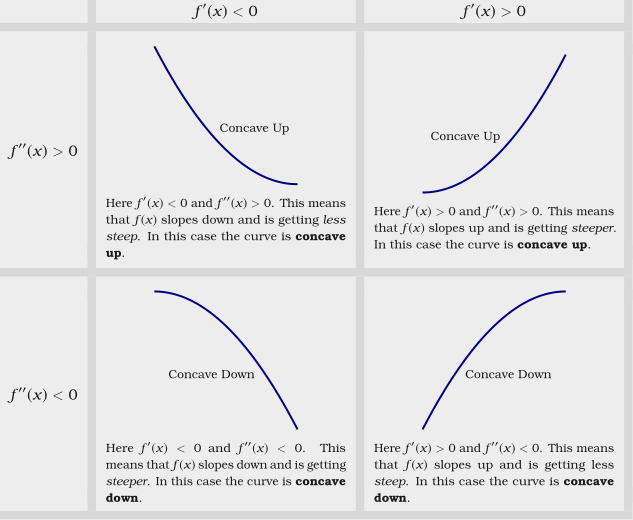
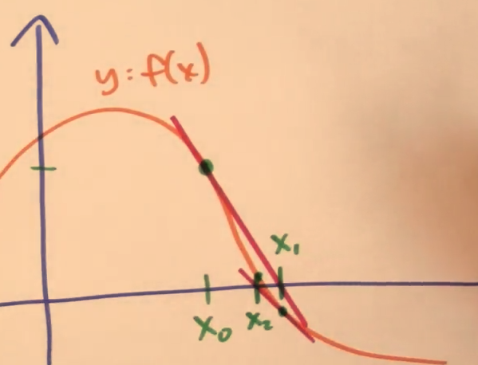

calculus
1 Limits
1.1 Definition
Let \(f(x)\) be defined on an open interval about \(x_0\), except possibly at \(x_0\) itself. We say that the limit of \(f(x)\) as \(x\) approaches \(x_0\) is the number \(L\), and write \[\lim_{x\to x_0} f(x) = L\] if, for every number \(\epsilon>0\), there exists a corresponding number \(\delta>0\) such that \[\forall x \ 0<|x-x_0|<\delta \Longrightarrow |f(x)-L|<\epsilon\]
1.1.1 DNF
\[\mbox{If }\lim_{x\to a+}f(x)\neq \lim_{x\to a-}f(x), \mbox{then }\lim_{x\to a}f(x)\mbox{ DNF}\]
1.1.2 Existence
\[\mbox{If }\lim_{x\to a+}f(x)=\lim_{x\to a-}f(x)=L, \mbox{then } \lim_{x\to a}f(x)=L\]
1.2 Continuity
To say "\(f(x)\) is continuous at \(a\)"
- \(f(x)\) is defined at \(x=a\)
- \(\lim_{x\to a}f(x)\) exists
- \(\lim_{x\to a}f(x) = f(a)\)
1.3 Laws
If \(\lim_{x\to c}f(x)=L\) and \(\lim_{x\to c}g(x)=M\), then
- Sum rule \[\lim_{x\to c}(f(x)+g(x)) = L+M\]
- Difference rule \[\lim_{x\to c}(f(x)-g(x)) = L-M\]
- Constant Multiple rule \[\lim_{x\to c}(k\cdot f(x)) = k\cdot L\]
- Product rule \[\lim_{x\to c}(f(x)\cdot g(x)) = L\cdot M\]
- Quotient rule \[\lim_{x\to c}\frac{f(x)}{g(x)} = \frac{L}{M}, \ M\neq 0\]
Root rule
If \(r\) and \(s\) are integer, and \(s\neq 0\), then: \[\lim_{x\to c}f(x)^{\frac{r}{s}}=L^{\frac{r}{s}}\]
1.4 Theorem
1.4.1 Intermediate Value Theorem
If \(f\) is a continuous function on a closed interval \([a,\ b]\), and if \(y_0\) is any value between \(f(a)\) and \(f(b)\), then \(y_0=f(c)\) for some \(c\) in \([a,\ b]\).
1.4.2 The Sandwich Theorem
If \(g(x)\le f(x)\le h(x)\) and \(\lim_{x\to c}g(x) = \lim_{x\to c} h(x) = L\), then, \[\lim_{x\to c}f(x)=L\]
1.4.3 Theorem 2
If \(f(x)\le g(x)\), \(\lim_{x\to c}f(x), \lim_{x\to c}g(x)\) exists，
then \(\lim_{x\to c}f(x)\le \lim_{x\to c}g(x)\)
1.5 l'Hôpital's rule
Let \(f\) and \(g\) be functions differentiable near \(a\).
If \(\lim_{x\to a}f(x)=\lim_{x\to a}g(x)= 0\mbox{ or }\pm\infty\) and \(\lim_{x\to a}\frac{f^\prime (x)}{g^\prime (x)}\) exists, and \(g^\prime(x)\neq 0\) for all \(x\) near \(a\), then \[\lim_{x\to a}\frac{f(x)}{g(x)} = L = \lim_{x\to a}\frac{f'(x)}{g'(x)}\]
1.5.1 Form transform
| Form | transform |
|---|---|
| \(\frac{0}{0}\), \(\frac{\infty}{\infty}\) | l'Hôpital |
| \(0\cdot \infty\) | \(\frac{\infty}{1/0}\), \(\frac{0}{1/\infty}\) |
| \(1^\infty\) | \(e^{\infty\cdot \lg(1)}\) |
| \(\infty^0\) | \(e^{0\cdot \lg(\infty)}\) |
| \(0^0\) | \(e^{0\cdot \lg(0)}\) |
| \(\infty - \infty\) | \(\frac{1/\infty - 1/\infty}{1/\infty^2}\) |
1.5.2 Error
\[\lim_{x\to \infty}\frac{x+\sin x}{x} = \lim_{x\to \infty}\frac{1+\cos x}{1}\] The transform does not exist!!!
1.6 \(lim_{x\to 0}\frac{sin(x)}{x}=1\)
2 Derivatives
2.1 Definition
The derivative of \(f\) at the point \(x\) is defined to be \[f^\prime(x)=\lim_{h \to 0} \frac{f(x+h) - f(x)}{h}\] If the derivative of \(f\) exists at x, we say that the function is differentiable at \(x\). The derivative of \(f\) exists means \(\lim_{h \to 0} \frac{f(x+h) - f(x)}{h}\) exists.
2.1.1 other form
\[f^\prime(x)=\lim_{x\to a}\frac{f(x)-f(a)}{x-a}\]
2.1.2 \(f(x+h)\approx f(x) + f'(x)h\) when \(h\) approaches 0
2.1.3 \(\frac{dy}{dx}\) and \(dx\)
Think of \(dx\) & \(dy\) as infinitesimal quantities. \[dy = f^\prime(x) dx\]
- \(d(u+v) = du + dv\)
- \(d(uv) = (du)v+u(dv)\)
2.2 Differentiable
2.2.1 Differentiable \(\to\) Continuity
\[f^\prime(x)=\lim_{x\to a}\frac{f(x)-f(a)}{x-a}\ exists\] \[\begin{align*} \lim_{x\to a}(f(x)-f(a)) & = \lim_{x\to a}(x-a)\cdot\lim_{x\to a}\frac{f(x)-f(a)}{x-a}\\ & = 0\cdot f^\prime(x) = 0 \end{align*}\] \[\lim_{x\to a}f(x) = f(a)\] which means \(f(x)\) is continuous at \(a\).
2.2.2 Continuity \(\nrightarrow\) Differentiable
\(f(x) = |x|\) is continuous at 0, but is not differentiable at 0.
2.3 Rules
2.3.1 Constant Multiple Rule
\[\frac{d}{dx}kf(x)=k\frac{d}{dx}f(x)\]
2.3.2 Power Rule
\[\frac{d}{dx}(x^n)=nx^{n-1}\]
- Proof
\[\begin{align*} f^\prime(x) & =\lim_{h\to 0}\frac{(x+h)^n-x^n}{h} \\ & = \lim_{h\to 0}\frac{\sum_{k=0}^{n}{n\choose k}x^k h^{n-k}-x^n}{h} \\ & = \lim_{h\to 0}\sum_{k=0}^{n-1}{n\choose k}x^k h^{n-k-1} \\ & = \lim_{h\to 0}({n \choose n-1}x^{n-1}h^0 + \sum_{k=0}^{n-2}{n\choose k}x^k h^{n-k-1}) \\ & = nx^{n-1} \end{align*}\]
2.3.3 Product Rule
\[\frac{d}{dx}(fg)=f'g + fg'\]
2.3.4 Quotient Rule
\[\frac{d}{dx}(\frac{f}{g})=\frac{f'g-fg'}{g^2}\]
2.3.5 Trigonometric Rule
\[\frac{d}{dx}(\sin x)=\cos x\] \[\frac{d}{dx}(\cos x)=-\sin x\] \[\frac{d}{dx}(\tan x)=\frac{d}{dx}(\frac{\sin x}{\cos x})=\frac{\cos^2 x+\sin^2 x}{\cos^2 x}=\sec^2 x\] \[\frac{d}{dx}(\sec x)=\sec x \tan x\] \[\frac{d}{dx}(\cot x)=-\csc^2 x\] \[\frac{d}{dx}(\csc x)=-\csc x \cot x\]
- inverse trigonometric Proof
\[\frac{d}{dx}(\arcsin x)=\frac{1}{\sqrt{1-x^2}}\] \[\frac{d}{dx}(arccsc\ x)=-\frac{1}{|x|\sqrt{x^2-1}}\] \[\frac{d}{dx}(\arccos x)=-\frac{1}{\sqrt{1-x^2}}\] \[\frac{d}{dx}(arcsec\ x)=\frac{1}{|x|\sqrt{x^2-1}}\] \[\frac{d}{dx}(\arctan x)=\frac{1}{1+x^2}\] \[\frac{d}{dx}(arccot\ x)=-\frac{1}{1+x^2}\]
2.3.6 Chain Rule
- first form
\[(f \circ g)^\prime (x) = f^\prime(g(x))g^\prime(x)\] means: \[\frac{\mbox{change in } f(g(x))}{\mbox{change in } x}=\frac{\mbox{change in } f(g(x))}{\mbox{change in }g(x)}\cdot\frac{\mbox{change in } g(x)}{\mbox{change in }x}\]
- second form
Let \(u = g(x)\), then \(f(g(x))\) turns out to be \(f(u)\) \[\frac{df}{dx}=\frac{df}{du}\frac{du}{dx}\]
- Example
\[\frac{d}{dx}(\sqrt{x^3-7x})\] Let \(f(u) = \sqrt u\) and \(u = x^3-7x\) \[\frac{df}{dx} = \frac{df}{du}\frac{du}{dx} = \frac{3x^2 - 7}{2\sqrt u} = \frac{3x^2 - 7}{2\sqrt{x^3-7x}}\]
2.3.7 Derivatives of Inverse Function
\[f^{-1}\prime(x)=\frac{1}{f^\prime(f^{-1}(x))}\] \[\frac{\mathrm{d}y}{\mathrm{d}x} = \frac{1}{\frac{\mathrm{d}x}{\mathrm{d}y}}\]
2.3.8 Some Proofs
coursera How do I justify the derivative rules?
2.4 Higher derivatives

2.5 Some derivatives
2.5.1 \(\ln x\)
\[f(x) = \ln x, f^{-1}(x) = e^x\] \[f\prime(x) = \frac{1}{(f^{-1})\prime(f(x))}=\frac{1}{e^{\ln x}}=\frac{1}{x}\]
2.5.2 Use \(\log\) to simplify derivatives of high power functions
Logarithms turn exponentation into multiplication, and multiplication into addition. eg: \[y = \frac{(1+x^2)^5\cdot (1+x^3)^8}{(1+x^4)^7}\] \[\ln y = 5\ln(1+x^2) + 8\ln(1+x^3) - 7\ln(1+x^4)\] \[\frac{1}{y}\frac{\mathrm{d}y}{\mathrm{d}x}=\frac{5\cdot 2x}{1+x^2} + \frac{8\cdot 3x^2}{1+x^3} - \frac{7\cdot 4x^3}{1+x^4}=\cdots\]
2.6 Application
2.6.1 Solving related rates problem
- Draw picture
- Find equation
- Differentiate
- Solve
2.6.2 Newton's method
is a method for finding successively better approximations to the roots (or zeroes) of a real-valued function. 
- Initial guess \(x_0\)
- New guess \(x_1=x_0-\frac{f(x_0)}{f^\prime(x_0)}\)
- \(x_2=x_1-\frac{f(x_1)}{f^\prime(x_1)}\)
- …
2.7 Theorem
2.7.1 Extreme value theorem
- Simple definition
If a function f is continuous on the closed interval [a, b],
then,
f attains a maximum value
and
f attains a minimum value
- Definition
If a function f is continuous on the closed interval [a, b],
then there are \(c\) and \(d\) in [a, b]
so that for all x in [a, b],
\(f(c) \le f(x) \le f(d)\)
- Find extreme value
- Differentiate
- List critical points, endpoints and non differentiable point
- Check those
- Check limiting behavior
2.7.2 Mean value theorem
- Concept
Average velocity is achieved, at some point, instantaneously.
- Definition
Suppose \(f\) is continuous on \([a, b]\) and differentiable on \((a, b)\), then:
there exists \(c\) in \((a, b)\), so that \[f^\prime (c) = \frac{f(b)-f(a)}{b-a}\]
- Application
- prove \(f(x)\) is constant if \(f^\prime(x)=0\) on whole interval
- prove \(f(x)\) is increasing if \(f^\prime(x)>0\)
2.8 Multivariate Derivative
\[f(x, y)=\frac{\partial f}{\partial x}\frac{dx}{dt} + \frac{\partial f}{\partial y}\frac{dy}{dt}\]
3 Integration
3.1 Antiderivative
if \(F\) is an antiderivative of \(f\), then \[\int f(x) dx=F(x)+C\]
3.2 Toolbox
3.2.1 \(\int\frac{1}{x}dx=ln|x| + C(x)\), \(C(x)\) is locally constant function
3.2.2 \(\int f(mx+b)dx=\frac{F(mx+b)}{m}+C\)
3.2.3 \(\int \sin^2 x dx\)
\[\sin^2 x=\frac{1-\cos(2x)}{2}\] \[\int \frac{1-\cos(2x)}{2}dx = \frac{x}{2}-\frac{\sin(2x)}{4}+C\]
3.3 Approxmation
3.4 Definition
\[\int_a^bf(x)dx=\lim_{n\to\infty}\sum_{i=1}^nf(x_i)(x_i-x_{i-1})\] \(n\to\infty\) means partitions max width \(\to 0\)
3.5 Theorem
3.5.1 If \(f\) is continuous, then \(f\) is integrable
3.6 Rules
3.6.1 Constant Multiple Rule
\[\int kf(x) = k\int f(x)\]
3.6.2 Sum Rule
\[\int(f(x)+g(x))dx=\int f(x)dx + \int g(x)dx=F(x)+G(x)+C\]
3.6.3 Power Rule
\[\int x^n dx=\frac{x^{n+1}}{n+1} + C\]
3.6.4 U-Substitution Rule
- Chain rule in reverse
let \(u=g(x)\), then \(du=g'(x)dx\) \[\int f(g(x))g^\prime(x)dx=\int f(u)du\]
- e.g. \(\int e^\sqrt{x}dx\)
let \(u=\sqrt{x}\), then \(du=\frac{1}{2\sqrt{x}}dx\), \(dx = 2\sqrt{x}du = 2udu\) \[\int e^\sqrt{x}dx = \int e^u 2udu = \cdots\]
- e.g. \(\int \sin^{odd} xdx\)
\[\int \sin^5 xdx=\int (\sin^2 x)^2 \sin x dx=-\int (1-\cos^2 x)^2 (-\sin x)dx\] let \(u=\cos x\), then \(du=-\sin x dx\) \[=-\int (1-u^2)^2du=-\int (1-2u^2+u^4)=-u+2\frac{u^3}{3}-\frac{u^5}{5}\] \[=-\cos x+2\frac{\cos^3 x}{3}-\frac{\cos^5 x}{5}+C\]
3.6.5 Integration By Parts
- Product rule in reverse
\[\int f(x)g^\prime(x) dx = f(x)g(x) - \int f^\prime(x)g(x) dx\] let \(u=f(x)\), \(v=g(x)\), then \(du=f^\prime(x)dx\), \(dv=g^\prime(x)dx\) \[\int udv = uv - \int vdu\]
3.7 Some Integrations
3.7.1 \(\int \sin^{even} xdx\)
- Use Half Angle Formula \[\sin^2 x=\frac{1-\cos 2x}{2}\] \[\cos^2 x=\frac{1+\cos 2x}{2}\]
\[\int \sin^4 xdx=\int(\sin^2 x)^2 dx=\int(\frac{1-\cos (2x)}{2})^2 dx\] \[=\int(\frac{\cos^2(2x)}{4}-\frac{1}{2}\cos(2x)+\frac{1}{4})dx\] \[=\int(\frac{1+\cos(4x)}{8}dx-\frac{\sin(2x)}{4}+\frac{1}{4}x\] \[=\frac{1}{8}x+\frac{\sin(4x)}{32}-\frac{\sin(2x)}{4}+\frac{1}{4}x + C\]
3.7.2 \(\int \sin^n x dx=\frac{n-1}{n}\int sin^{n-2} x dx\)
see Coursera
3.8 Fundamental Theorem of Calculus
Suppose \(f:[a, b]\to \mathbb{R}\) is continuous.
Let \(F\) be the accumulation function, given by \[F(x)=\int_{a}^{x}f(t)dt\] or \[\frac{d}{dx}\int_{a}^{x}f(t)dt=f(x)\]
Then \(F\) is
- continuous on \([a, b]\)
- differentiable on \((a, b)\)
- \(F^\prime(x)=f(x)\)
3.8.1 \(F(b)-F(a)\)
Suppose \(f:[a, b]\to \mathbb{R}\) is continuous, and \(F\) is an antiderivative of \(f\).
Then \[\int_a^bf(x)dx=F(b)-F(a)\]
3.8.2 More Details
\[\frac{d}{db}\int_a^b f(x)dx=f(b)\] \[\frac{d}{da}\int_a^b f(x)dx=-f(a)\] \[\int_a^b f(x)dx=-\int_b^a f(x)dx\]
3.9 Arc Length
\[\int\sqrt{dx^2+dy^2} dx=\int\sqrt{1+(\frac{dy}{dx})^2}dx\]
4 Series
4.1 \(\sum_{i=1}^n i\)
\[\sum_{i=1}^n i=\frac{n(n+1)}{2}\]
4.2 \(\sum_{i=1}^n i^2\)
\[\sum_{i=1}^n i^2=\frac{n(n+1)(2n+1)}{6}\]
4.3 \(\sum_{i=1}^n i^3\)
Nicomachus's Theorem: \[\sum_{i=1}^n i^3=(\sum_{i=1}^n i)^2=\frac{i^2(i+1)^2}{4}\]
5 e
5.1 Definition
- \(e = \lim_{n \to \infty}(1+\frac{1}{n})^n=\lim_{n \to \infty}\sum_{i=0}^nC_i^n1^{n-i}(\frac{1}{n})^i\)
- \(e = \sum_{n=0}^{\infty}\frac{1}{n}\)
- \(\int_1^x\frac{1}{t}dt = 1, then\space x=e\)
- \(\lim_{h\to 0}\frac{x^h-1}{h}=1\)